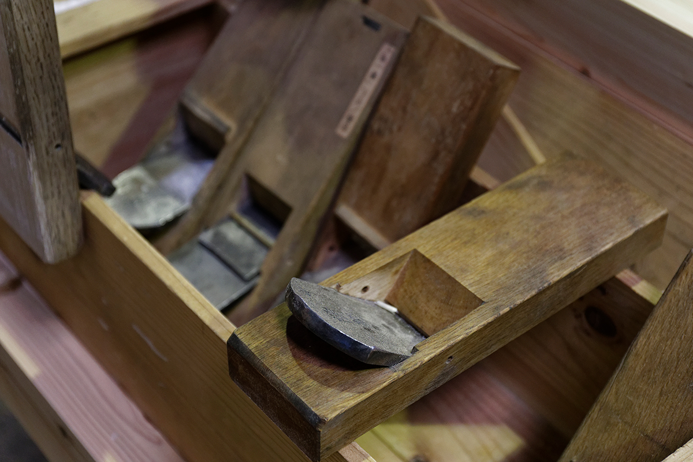
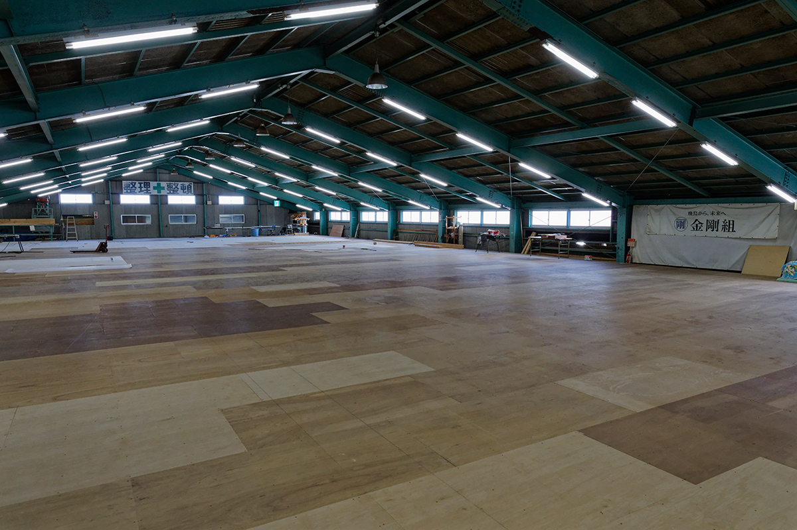
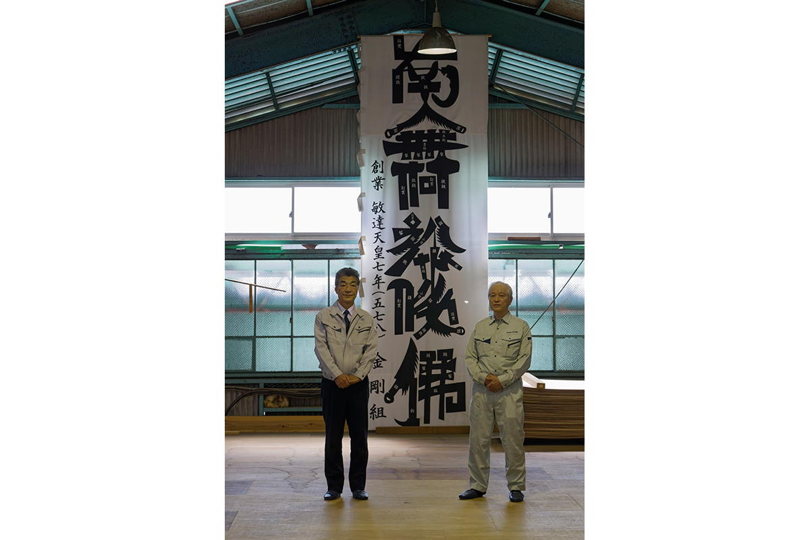

Префектура Осака · Тэннодзи и Сакаи · ремесло
«Конго-гуми»: храмовые плотники из Осаки и старейшая компания мира

Пагоды японских храмов собраны из дерева без гвоздей и железных скоб, а стоят сотни лет и переживают землетрясения. Строит их в Осаке компания, которая ведёт счёт с 578 года и считается старейшей из действующих в мире.
История
Плотники одного храма
Деревянные храмы Японии держатся на сложных соединениях бруса: детали врезаются друг в друга так точно, что гвозди и металлические крепления не нужны. Пагоды, собранные таким способом, стоят веками, и землетрясения им почти не страшны.
Этим ремеслом с 578 года занимается «Конго-гуми». Компания базируется в районе Тэннодзи в Осаке, рядом с храмом Ситэнно-дзи. Её история начиналась как история придворных плотников этого храма: в 2023 году ей исполнилось 1445 лет. Около 1300 лет «Конго-гуми» работала только на Ситэнно-дзи и ни на кого больше.
Легко представить, что такая история была ровной и благополучной. На деле компания несколько раз оказывалась на грани закрытия, и каждый раз её приходилось спасать. У «Конго-гуми» есть большой производственный центр в городе Сакаи на юге префектуры, где работают миядайку, японские храмовые плотники.

Кризисы
Как компанию спасали дважды
Первое серьёзное испытание пришло в 1942 году. Шла война, и правительство по особому указу объединяло и закрывало мелкие и средние предприятия. Под этот указ попала и «Конго-гуми». Отстоять её смогла глава семьи Ёсиэ Конго: она раз за разом ходила по ведомствам и добилась, чтобы компания сохранила самостоятельность как производитель деревянных ящиков для армии.
Мастера вспоминают её с восхищением. Отец старшего плотника тоже работал на «Конго-гуми», и когда ему был 31 год, Ёсиэ Конго поручила ему восстановление главного зала Ситэнно-дзи. Доверить такую работу молодому плотнику решился бы не каждый. В компании хранят 16 наставлений, и среди них есть правила бережно относиться к младшим и работать командой. По словам председателя, Ёсиэ Конго жила именно так.
Второй кризис случился в 2005 году, когда компания оказалась на грани банкротства. На помощь пришла крупная осакская строительная компания «Такамацу Кэнсэцу». Её глава сказал, что потерять «Конго-гуми» было бы позором для Осаки, и сам возглавил спасение. Банки и партнёры отнеслись к этому с пониманием. Название сохранили, и компания продолжила работу в новом виде.

Мастера
Сёгун и даймё
В 2023 году с «Конго-гуми» работали семь бригад храмовых плотников в Токио и Осаке. Каждая бригада называется «куми». Отношения между ними и компанией старший плотник объясняет через образы старой Японии.
«Если по-простому, это сёгун и даймё. Мы работаем ради одного: быть полезными храму Ситэнно-дзи и чтобы "Конго-гуми" не прерывалась. Мастерство оттачиваем для того, чтобы про работу говорили: вот что умеет "Конго-гуми", вот что умеет дом Конго»
старший плотник компании
Для плотников слово главы рода Конго закон. Человеку из обычной компании это трудно понять, признаёт председатель, но именно доверие между семьёй и мастерами помогло «Конго-гуми» продержаться так долго.
Учатся плотники прежде всего у предшественников. Когда разбирают старое здание, мастера нередко удивляются тому, как работали раньше.
«Старые плотники работали смело. Сейчас все боятся ошибиться, а у них чувствуется настрой: ну ошибёшься, и что с того. Кто боится ошибок, хорошо работать не сможет»
старший плотник компании
Ремесло
Рубанок без спешки
Председатель пришёл в «Конго-гуми» в 2011 году из обычной строительной компании, где всё мерили эффективностью. Вскоре после прихода он увидел в производственном центре, как плотник раз за разом проходит рубанком одну и ту же деталь. Со стороны это выглядело как бесконечный повтор, и он не выдержал: нельзя ли как-то побыстрее? Старший плотник ответил вопросом: «Вы предлагаете работать спустя рукава?»
После этого председатель понял, что мерить работу храмовых плотников обычной эффективностью нельзя. Свою задачу он увидел в другом: выстроить компанию так, чтобы её можно было передать следующим поколениям.
Наследие
Храмы, которые оценят через двести лет
После 1926 года «Конго-гуми» бралась и за обычное строительство, в том числе из бетона. Потом компания вернулась к истокам и сосредоточилась на строительстве и восстановлении храмов и святилищ. Главное в этой работе плотники, поэтому мастера, которым можно спокойно доверить заказ даже в далёкой провинции, остаются опорой всей компании.
«Цену нашей работы сразу не увидишь. Только через 200 или 300 лет после постройки становится понятно, хорошо ли мы сделали своё дело»
старший плотник компании
Председатель смотрит на это с другой стороны: «Конго-гуми» знает, как будет выглядеть храмовый комплекс через двести и триста лет. Как стареют такие постройки, здесь знают по собственному многовековому опыту, и, по его словам, вряд ли есть другая компания, которая может это сказать.
Увидеть, ради чего всё началось, можно в храме Ситэнно-дзи в районе Тэннодзи: именно ему «Конго-гуми» служит с самого основания.
Храм Ситэнно-дзи
- Адрес
- префектура Осака, Осака, район Тэннодзи, Ситэнно-дзи, 1-11-18
- Сайт
- shitennoji.or.jp
«Конго-гуми»
- Сайт
- kongogumi.co.jp
Фото: Тосихико Такэнака.